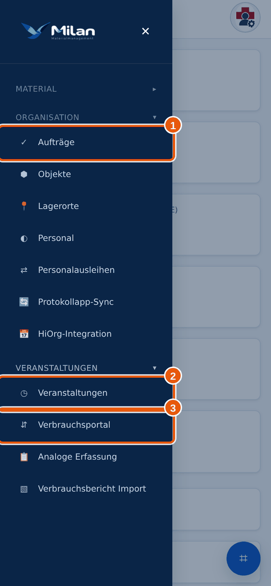
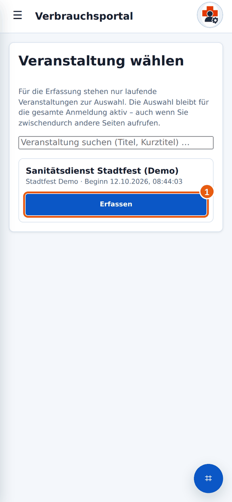
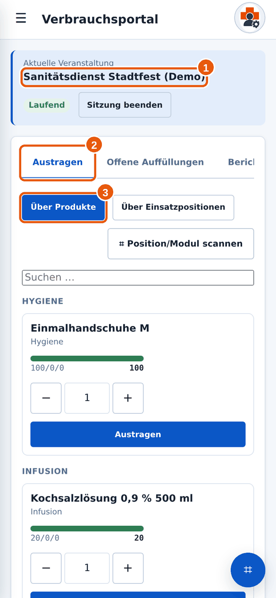

Anleitung 2.2
2.2Veranstaltung wählen
Wann brauchst du das? Du willst Verbrauch eintragen oder Material auffüllen.
Kurz gesagtMenü → Verbrauchsportal → bei deiner Veranstaltung auf Erfassen tippen. Prüfe den Titel, bevor du loslegst.
✔Das brauchst du vorher
- Die Veranstaltung muss in Milan angelegt sein und laufen. Das macht die Materialverwaltung.
→So geht’s
- Tippe auf das Menü-Symbol, öffne die Gruppe Veranstaltungen und tippe auf Verbrauchsportal.

Das Verbrauchsportal findest du in der Gruppe Veranstaltungen (3). - Du siehst die Liste der laufenden Veranstaltungen. Suche deine Veranstaltung. Mit dem Suchfeld oben findest du sie nach Titel oder Kurztitel. Tippe bei ihr auf Erfassen 1.

1 Erfassen. Die Veranstaltung ist hier ein Beispiel. - Jetzt öffnet sich die Erfassungsansicht. Oben bei 1 steht die gewählte Veranstaltung. Bei 2 siehst du die drei Reiter Austragen, Offene Auffüllungen und Bericht. Bei 3 wählst du, wie du Material findest.

1 Veranstaltung, 2 Reiter, 3 Weg zur Auswahl.
Richtige Veranstaltung?
Lies den Titel oben genau. Verwechsle nicht ähnliche Veranstaltungen. Eine falsche Zuordnung fällt erst später auf. Im Zweifel vergleiche mit der Nummer oder dem Namen aus deiner Dienstplanung.
Meine Veranstaltung steht nicht in der Liste.
Es werden nur laufende Veranstaltungen angezeigt. Ist deine nicht dabei, wurde sie noch nicht angelegt oder ist schon beendet. Melde dich beim Materialwart.
Es steht „Aktuell läuft keine Veranstaltung“.
Dann gibt es gerade keine laufende Veranstaltung in Milan. Frage beim Materialwart nach.
Wie wechsle ich zu einer anderen Veranstaltung?
Tippe in der Erfassungsansicht auf Sitzung beenden. Danach kannst du eine andere wählen (siehe Bericht und Sitzung beenden).